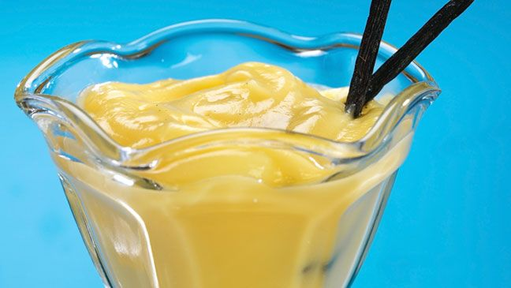

Recetas Dulces
Para los que no se empalagan...
Budín Inglés

Budín Inglés
El budín más esponjoso que vas a probar en tu vida, ni te vas a dar cuenta que no contiene gluten.
Ingredientes
- Huevos 2
- Azúcar tres cuartos de taza
- Aceite neutro media taza
- Leche media taza
- Premezcla comercial 2 tazas
- Esencia de Vainilla 1 cucharada
- Polvo para Hornear 2 cucharadas
Procedimiento
- Batir los huevos con el azúcar hasta espumar
- Agregar el aceite y la leche y seguir batiendo
- Unir la esencia de vainilla y cambiar batidor por espátula
- Agregar de a poco la premezcla con el polvo de hornear e integrar bien
- Hornear a 180º durante 40 minutos aproximadamente
- Preparate unos mates y disfrutá!
Pasta Frola
Pasta Frola
La descendiente argentina de la crostata italiana.
Ingredientes
- Huevos 1
- Azúcar 100 gr
- Manteca 8o gr
- Premezcla comercial 200 gr
- Esencia de Vainilla 1 cucharada
- Polvo para Hornear 1 cucharada
- Dulce de membrillo o batata 500 gr
- Algún licor o ron a elección
Procedimiento
- Batir la manteca pomada con el azúcar
- Agregar el huevo con la escencia de vainilla
- Añadir la premezcla junto con el polvo de hornear
- Formar una masa y llevar a la heladera por una hora
- Cortar el dulce elegido en cubos y mezclar con un chorrito del licor
- Levar a microondas o al fuego hasta que se transforme en una crema
- Estirar la masa y colocar la mitad en un molde redondo.
- La mitad restante se debe cortar en tiras y reservar
- Agregar el dulce en la masa y colocar las tiras de masa a modo de rejilla
- Hornear a 180ªC hasta que la masa dore
- Hacete unos mates y ¡disfrutà!
Galletitas
Galletitas

Galletitas crujientes y super ricas.
Ingredientes
- Huevos 1
- Azúcar 80gr
- Manteca 80 gr
- Premezcla comercial 200 gr
- Esencia de Vainilla 1 cucharada
- Polvo para Hornear 1 cucharada
Procedimiento
- Batir la manteca con el azúcar hasta lograr una preparación cremosa
- Agregar el huevo e incorpar bien
- Unir la esencia de vainilla y cambiar batidor por espátula
- Agregar de a poco la premezcla con el polvo de hornear e integrar bien
- Disponer en placa enmantecada con cuchara o haciendo bolitas y luego aplastándolas
- Hornear a 180º durante 40 minutos aproximadamente
- Preparate unos mates y disfrutá!
- TIP: podés agregar pepitas de chocolate para más placer.
Postre fácil de vainilla

Crema de vainilla
Fácil y rico.
Ingredientes
- Huevos 2
- Azúcar 80gr
- Leche 500 ml
- Almidón de maíz 50 gr
- Esencia de Vainilla 1 cucharada
Procedimiento
- Mezclar la leche con el azúcar y el almidón de maíz
- Llevar al fuego en una olla grande a fuego medio sin dejar de mezclar
- Cuando empiece a espesar, agregar los huevos y batir rápidamente por un minuto
- Fuera del fuego, agregar la esencia de vainilla
- Colocar en un bowl para que enfríe con un film en contacto para que no se forme esa crosta que todos odiamos
- A comer!
- TIP: Se puede preparar al microondas a máxima potencia siempre, calentando primero la leche con el almidón y el azúcar a intervalos de 2 minutos hasta que espece. Luego se agregan los huevos y se lleva al micro por un minuto más. Después, el procedimiento es el mismo.